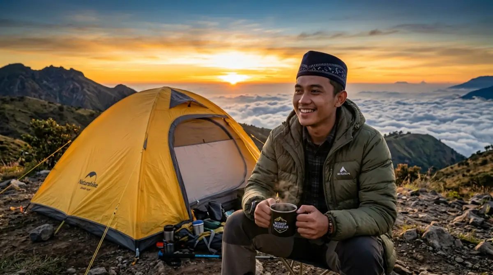

Momen sunrise yang sempurna dimulai dari persiapan perlengkapan yang tepat.Sudah susah-susah mengambil cuti tahunan, mendaki berjam-jam membawa beban berat, tapi saat momen golden sunrise tiba, kamu malah meringkuk menggigil di sudut tenda? Bayangkan penyesalan yang tertinggal saat melihat teman-temanmu asyik berfoto dengan latar langit jingga, sementara bibirmu membiru karena salah membawa jaket.
Momen mahal yang tak bisa diulang itu hancur berantakan hanya gara-gara keliru menyusun barang bawaan. Suhu di dataran tinggi, apalagi kawasan pegunungan dan bukit seperti di Batu atau Malang saat dini hari, benar-benar tidak bisa diajak bercanda.
Membawa perlengkapan kemah di gunung yang tepat bukan sekadar untuk gaya-gayaan anak outdoor, melainkan benteng pertahanan utama dari ancaman mematikan bernama hipotermia. Jangan sampai sisa cuti berhargamu terbuang percuma menjadi memori buruk yang disesali seumur hidup. Mari kita bedah daftar barang wajib yang harus ada di dalam tas carrier-mu, agar momen menyambut matahari terbitmu terasa hangat, aman, dan tanpa penyesalan sekecil apa pun!
Mengapa Suhu Pegunungan Terasa Jauh Lebih Menusuk?
Sebelum kita mengepak barang, kita harus paham dulu musuh seperti apa yang sedang kita hadapi. Banyak pendaki pemula meremehkan dinginnya gunung karena mengira rasanya "paling cuma seperti AC kantor". Ini analogi yang sangat keliru. Di kantor, sedingin apa pun AC-nya, kamu masih berada di ruang tertutup tanpa embusan angin langsung, dan kamu selalu bisa lari ke pantri untuk menyeduh kopi.
Di gunung, suhu udara riil bisa turun drastis hingga satu digit derajat Celcius, bahkan mendekati titik beku di puncak kemarau. Ditambah lagi dengan wind chill factor—sensasi dingin tambahan akibat angin kencang yang menerpa kulit. Tubuh manusia secara alami memproduksi panas, namun angin gunung akan menyapu lapisan udara hangat di sekitar kulitmu dalam sekejap.
Mengabaikan faktor ini rasanya sama seperti nekat presentasi proyek besar di depan direksi tanpa membawa file cadangan; sebuah sabotase terhadap diri sendiri. Oleh karena itu, persiapan fisik dan peralatan dengan spesifikasi yang bisa dipertanggungjawabkan keamanannya adalah hal mutlak.
Daftar Perlengkapan Kemah di Gunung yang Wajib Kamu Bawa
Membawa selimut tebal dari kasur rumah bukanlah solusi yang bijak, karena selain sangat berat, selimut tersebut tidak dirancang untuk menahan cuaca ekstrem. Peralatan luar ruang modern diciptakan berdasarkan riset panjang untuk memaksimalkan retensi panas tubuh sekaligus menekan bobot barang. Berikut adalah komponen utama yang wajib kamu miliki.
1. Tenda Double Layer: Pelindung Utama dari Angin Malam
Rumah sementaramu di alam liar adalah penentu utama kualitas tidurmu. Sebuah kesalahan fatal jika kamu nekat membawa tenda single layer (satu lapisan) yang biasa dijual murah di minimarket. Tenda jenis ini sangat rentan terhadap kondensasi.
Saat kamu bernapas di dalam tenda yang dingin, uap panas dari napasmu akan menempel di dinding tenda sebelah dalam, berubah menjadi titik-titik air, dan menetes kembali ke wajahmu saat kamu tertidur.
Pilihlah tenda double layer yang memiliki dua lapisan: inner (bagian dalam berupa jaring untuk sirkulasi udara) dan outer atau flysheet (bagian luar yang tahan air dan angin). Celah udara di antara kedua lapisan ini berfungsi sebagai penyekat termal, layaknya dinding kaca ganda pada gedung perkantoran mewah.
Pastikan tenda tersebut menggunakan rangka (frame) berbahan aluminium. Selain lebih ringan dari fiberglass, frame aluminium jauh lebih tangguh menahan terjangan angin gunung yang bisa datang tiba-tiba di tengah malam.
2. Matras Aluminium Foil: Menyekat Suhu Tanah yang Membeku
Banyak yang tidak menyadari bahwa rasa dingin di tenda itu mayoritas merambat dari bawah (permukaan tanah), bukan sekadar dari udara sekitar. Tidur beralaskan tikar lipat tipis atau matras karet biasa di gunung itu ibarat kamu tidur beralaskan lantai marmer yang baru saja diguyur air es. Suhu dingin bumi akan perlahan-lahan menyedot panas tubuhmu lewat punggung.
Solusi paling efektif adalah menggunakan matras aluminium foil. Secara teknis, material aluminium ini memiliki sifat reflektif. Ia memblokir suhu dingin yang memancar dari tanah, dan secara bersamaan memantulkan kembali panas radiasi dari tubuhmu ke arah atas. Matras ini sangat ringan, tidak memakan banyak tempat, dan menjadi syarat wajib bagi siapa pun yang ingin tidur nyenyak menanti sunrise. Letakkan matras ini sebagai alas paling bawah, tepat di bawah sleeping bag-mu.
 Perlengkapan kemah yang tepat adalah investasi keselamatan di alam bebas.
Perlengkapan kemah yang tepat adalah investasi keselamatan di alam bebas.3. Sleeping Bag Berbahan Dacron atau Polar: Kepompong Kehangatan
Kantong tidur atau sleeping bag adalah tempat berlindung terakhirmu dari cuaca ekstrem. Hindari sleeping bag tipis yang biasanya hanya cocok untuk acara kemah di halaman sekolah. Spesifikasi yang sangat disarankan oleh para praktisi kegiatan luar ruang adalah sleeping bag dengan isian Dacron tebal, atau yang memiliki lapisan dalam berbahan fleece/polar.
Dacron bekerja dengan cara memerangkap molekul udara di dalam serat-seratnya, yang kemudian dipanaskan oleh suhu tubuh alamimu. Pilihlah desain mummy (menyempit di bagian kaki dan memiliki pelindung kepala yang bisa diserut). Desain ini meminimalkan "ruang mati" atau udara kosong di dalam kantong yang harus dipanaskan oleh tubuhmu.
Catatan penting yang sering disalahpahami: Jangan memakai jaket super tebal berlapis-lapis di dalam sleeping bag. Kantong tidurmu bekerja dengan memanfaatkan radiasi panas kulit. Jika kulitmu tertutup rapat oleh jaket tebal, panas tubuh tidak akan bisa memanaskan ruang di dalam sleeping bag. Cukup gunakan pakaian dasar yang nyaman, dan biarkan teknologi sleeping bag bekerja untukmu.
4. Jaket Windbreaker dan Teknik Pakaian Berlapis (Layering System)
Ketika alarm berbunyi jam 4 pagi dan kamu harus keluar tenda untuk berburu matahari terbit, suhu sedang berada di titik terendah. Di momen krusial inilah layering system atau sistem pakaian berlapis menjadi penyelamat. Sistem ini jauh lebih fleksibel dan hangat dibandingkan sekadar memakai satu jaket tebal berukuran raksasa.
- Base Layer: Pakaian yang bersentuhan langsung dengan kulit. Jangan pernah memakai bahan katun! Katun menyerap keringat tapi sangat lambat kering. Keringat basah yang menempel di kulit dan terkena angin dingin adalah jalan pintas menuju hipotermia. Gunakan bahan dry-fit atau polyester yang cepat menguapkan peluh.
- Mid Layer: Lapisan penghangat (insulator). Ini bisa berupa sweater berbahan fleece atau jaket bulu angsa (down jacket) ringan. Tugasnya adalah menahan agar panas tubuhmu tidak kabur ke udara bebas.
- Outer Layer: Ini adalah jaket windbreaker atau waterproof-mu. Anggap lapisan ini sebagai jas hujan dan tameng penangkal angin. Lapisan ini memastikan embusan angin beku tidak bisa menembus dan merusak lapisan mid layer yang hangat.
5. Aksesori Pelindung Ekstremitas Tubuh
Saat tubuh terpapar dingin ekstrem, sistem sirkulasi darah secara otomatis akan menarik aliran darah hangat dari ujung-ujung tubuh (tangan dan kaki) untuk difokuskan menjaga organ vital di dada dan otak. Itulah sebabnya jari tangan, kaki, hidung, dan telinga adalah bagian pertama yang terasa kebas dan mati rasa.
Untuk mencegahnya, perlengkapi dirimu dengan:
- Kupluk (Beanie): Sejumlah besar panas tubuh keluar dari kepala yang tidak tertutup. Kupluk berbahan polar akan melindungi kepala dan telingamu dari hantaman angin es.
- Sarung Tangan: Bawa sarung tangan polar yang nyaman. Jika kawasan tujuannya sangat dingin, bawa dua lapis (lapisan dalam polar, lapisan luar anti-angin/air).
- Kaos Kaki Ekstra untuk Tidur: Ini aturan emas dalam berkemah. Selalu sediakan sepasang kaos kaki tebal berbahan wol atau polar yang hanya dipakai untuk tidur. Jangan pernah memakai kaos kaki bekas jalan yang sudah lembap oleh keringat untuk tidur di dalam sleeping bag.
Jangan Berkompromi dengan Persiapan
Menyiapkan sederet barang-barang khusus ini mungkin sekilas terlihat seperti menambah beban pekerjaan. Apalagi jika di hari biasa, otakmu sudah lelah menyusun laporan dan memenuhi target bos. Namun, menyortir spesifikasi barang ini adalah investasi paling masuk akal untuk keselamatanmu sendiri. Di alam bebas, kita tidak punya kemewahan untuk menekan tombol undo pada kesalahan yang sudah terjadi.
Jika dirasa terlalu mahal untuk membeli semua perlengkapan ini, tenang saja. Saat ini sudah sangat banyak penyedia jasa sewa alat-alat outdoor tepercaya yang menawarkan barang berspesifikasi tinggi. Yang paling penting adalah kamu sudah teredukasi dan tahu persis standar barang seperti apa yang layak dibawa naik ke pegunungan.
Penutup
Menginjakkan kaki di ketinggian, menembus dinginnya embun pagi, dan menyaksikan secara perlahan semburat jingga matahari terbit menyinari bumi adalah sebuah pencapaian personal yang patut dirayakan. Setelah minggu-minggu yang melelahkan di balik meja kerja, kamu berhak mendapatkan waktu jeda dan liburan yang sempurna. Tolong, jangan biarkan kecerobohan kecil dalam persiapan alat merenggut kebahagiaan itu.
Menyiapkan spesifikasi perlengkapan kemah di gunung secara presisi memang butuh usaha ekstra di awal. Namun, itu adalah harga yang sangat, sangat murah dibandingkan jika kamu harus mempertaruhkan keselamatan diri. Kelak di masa depan, saat kamu membuka galeri foto di ponselmu, pastikan yang kamu lihat adalah potret dirimu yang tersenyum hangat, nyaman, dan bahagia berlatar belakang lautan awan. Rencanakan perjalananmu dengan kepala dingin, lengkapi persenjataanmu dengan bijak, dan pastikan pengalaman menyambut fajar di pucuk bumi ini menjadi kenangan indah tanpa setitik pun penyesalan.
FAQ